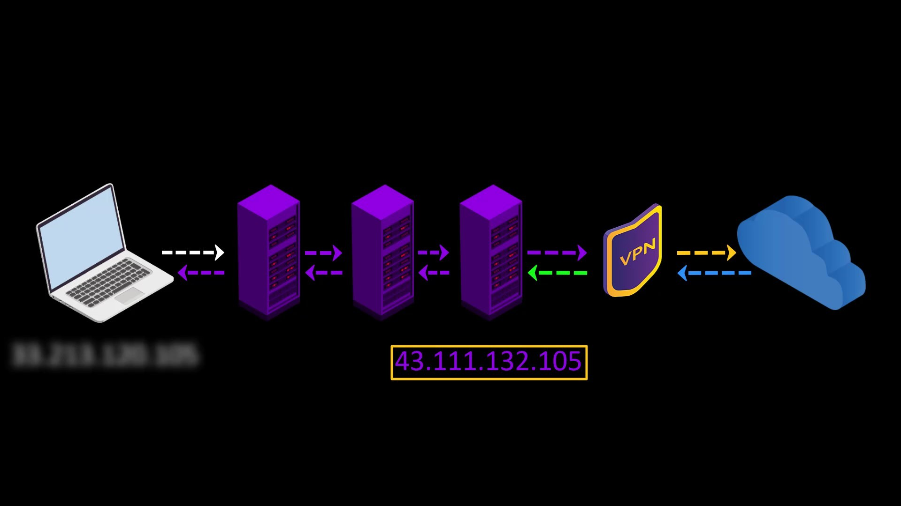
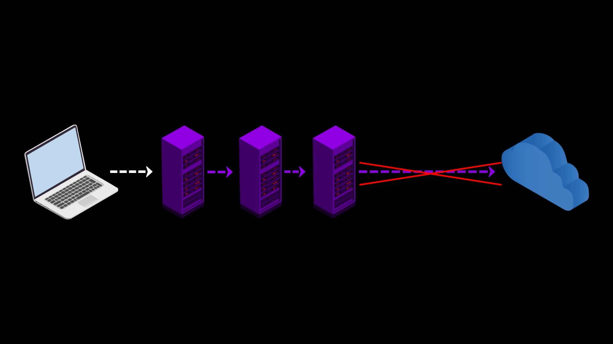
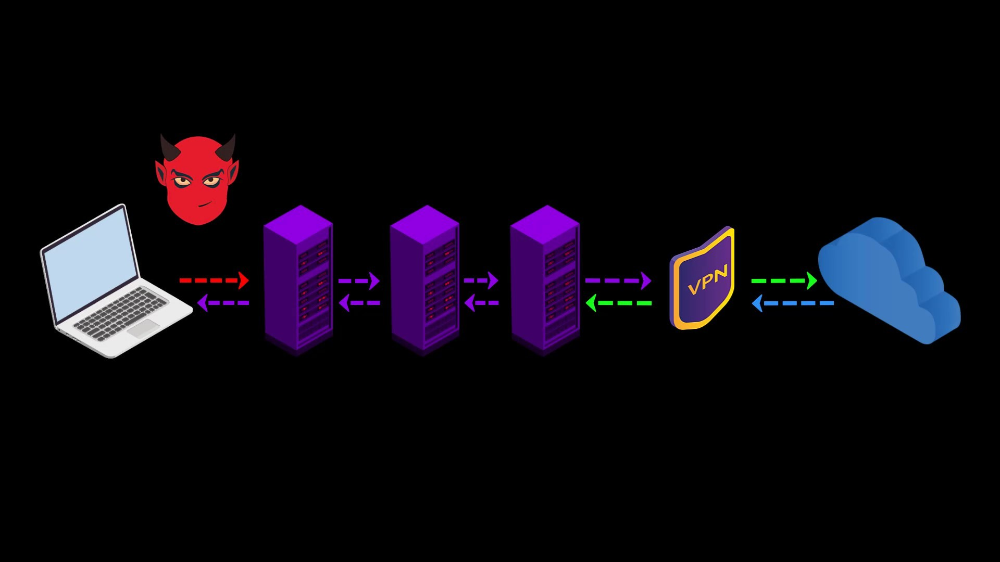
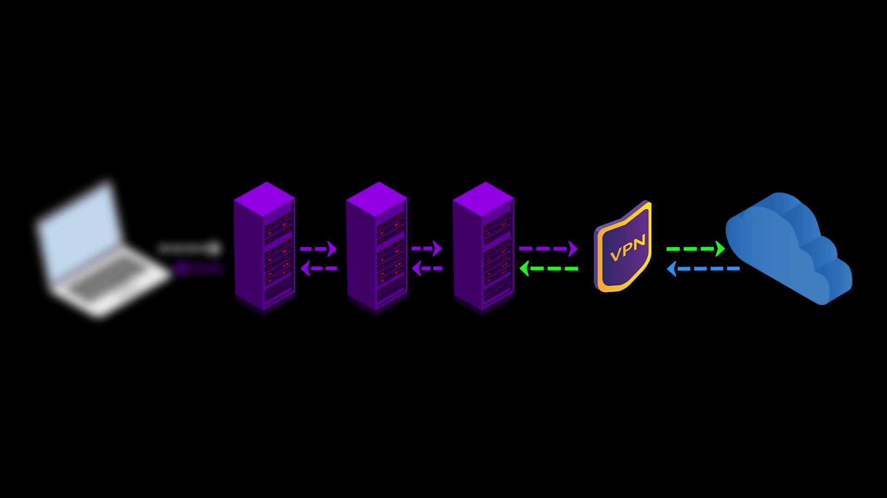
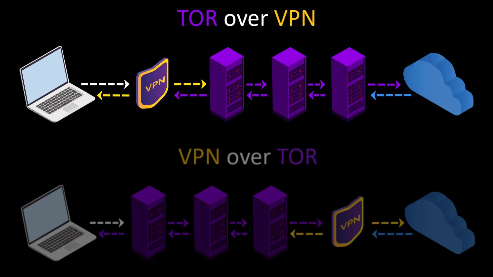
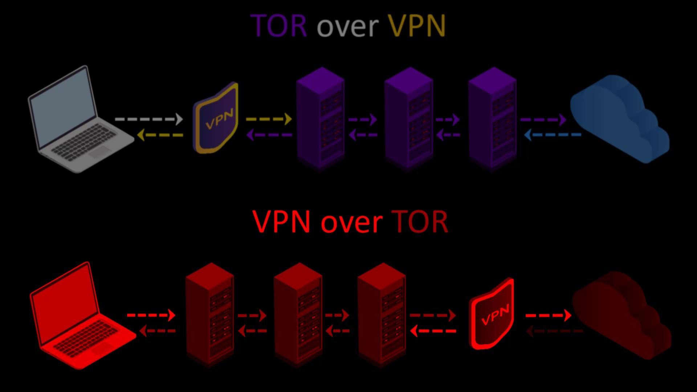
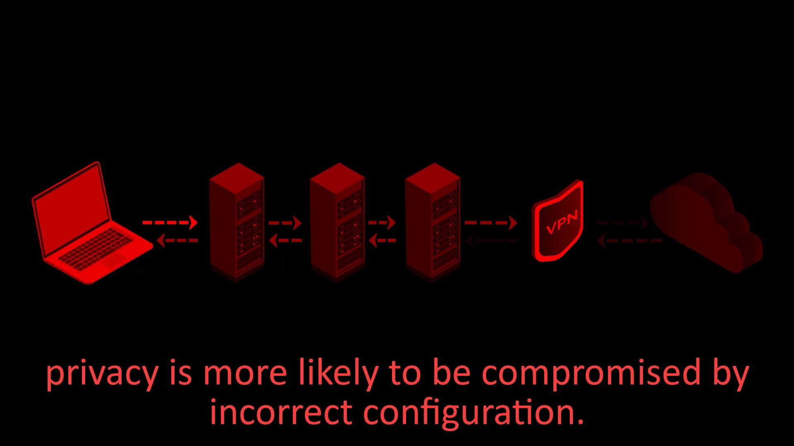

VPN over TOR
In this connection type, in contrast to the connection type i mentioned in the previous lecture, your internet access looks like the this.
Your Computer -> Tor -> VPN -> Internet
At the time of preparing this course, there were only 2 VPN service providers, "AirVPN" and "BolehVPN", that provided this service.

If we briefly touch on the advantages and disadvantages of using VPN over Tor;
Advantages
- Since you are connected to the VPN server via Tor, the VPN provider cannot see your real IP address, only the Tor exit node ip address.

Assuming that you pay for the VPN service anonymously with secure cryptocurrency, your anonymity will not be compromised even if the VPN service keeps a log. - You can use it to visit websites that block visitors from the Tor network. Some websites block users connected to the tor network for security reasons.

When you use VPN over TOR, your VPN connection will appear, so you can overcome this obstacle. However, it would make more sense to use only VPN to visit such websites.


Disadvantages
- Your internet service provider and anyone observing your network can see that you are connecting to the Tor network.
- Your VPN provider can see your internet traffic. However, because the traffic comes through the Tor network, it can never be directly associated with you if it does not know your real identity indirectly.
- You cannot access websites with onion services via VPN.
- The fact that the Tor network connects to a single VPN point can be a disadvantage for the timing attacks i mentioned earlier. However, if you made the payment anonymously, even if information is leaked from the VPN service, it cannot be directly associated with you.
- It is somewhat more difficult to configure and privacy is more likely to be compromised by incorrect configuration. Configuration settings may vary depending on the service provider used.




When we consider all these advantages and disadvantages, it can be said that using the second method, "VPN over Tor", is not a good choice for many people.

If you are using the right VPN service, the first method "Tor over VPN" connection will meet all your needs. I don't recommend using the "VPN over Tor" method and will not be covered in the course.
I just wanted to explain it briefly so that you are aware that such a method also exists.
Although Tor alone provides you with very good anonymity, you can decide to use the Tor network over VPN or alone, depending on your needs, considering the advantages and disadvantages of using VPN. For example, if the address you want to connect to has an SSL certificate and you don't want to hide the information that you are connected to the Tor network from your internet service provider or observers, you don't have to use a VPN.

Yes, you have finally learned to bypass all obstacles and securely connect to the Tor network via the Tor browser. Now let's talk about the Tor browser settings and why those settings should exist.